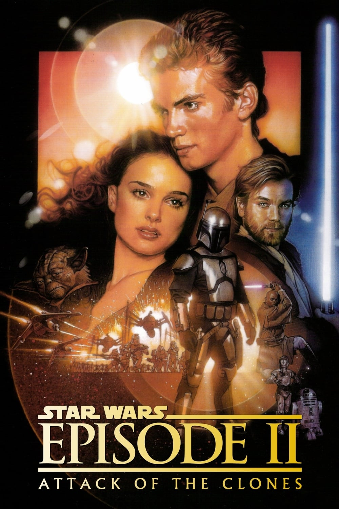
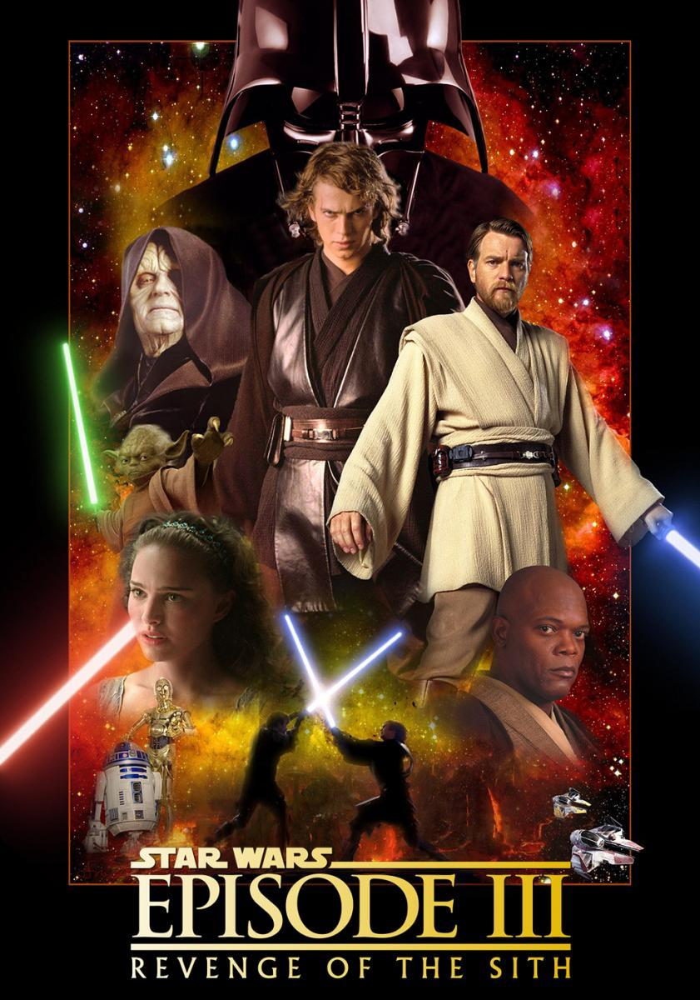
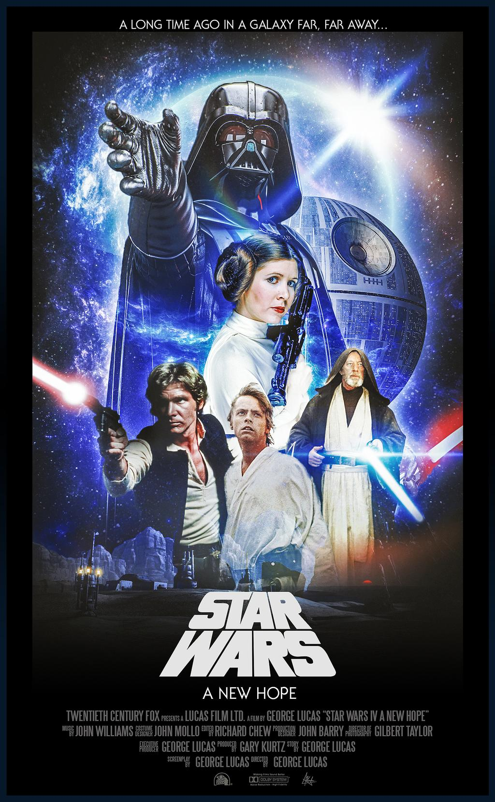
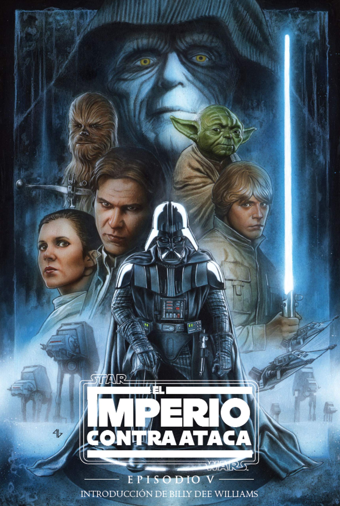

PELICULAS
El pequeño planeta Naboo, vive una situación de bloqueo por parte de la Federación de Comercio, que reivindica el control de todas las rutas comerciales. Para solucionar el problema el canciller de la República, Valorum, envía para negociar a dos caballeros Jedi, el Maestro Jedi, Qui-Gon Jinn y su aprendiz, Obi-Wan Kenobi, lo cual acelera los planes de Darth Sidious que decide adelantar su ataque contra Naboo. Los caballeros Jedi consiguen huir y llegan a Naboo, donde, con la ayuda de Jar Jar Binks, un gunga expulsado de Otoh Gunga, la ciudad sumergida donde habitaba, llegan hasta Theed, la capital, a tiempo para salvar a la reina Amidala y huir con ella con destino a Coruscant. En el camino se detienen en el desierto-planeta Tatooine, para reparar un motor. Allí Qui-Gon descubre a un niño, Anakin, esclavo de Watto, con el que Padmé, doncella de la reina traba amistad. Annakin, pese a su minoría de edad tiene una gran intuición y fuerza mental, que le lleva a ganar incluso la carrera de vainas contra el poderoso Sebulba, lo que le valdrá conseguir gratuitamente la pieza de la nave y ser liberado. Qui-Gon intuye que Anakin es el individuo destinado para traer equilibrio a la Fuerza, y decide entrenarlo como Caballero Jedi. Una vez en Coruscant la reina Amidala pide ayuda al senado de la República, pero su gobierno, sometido a los burócratas ha sido debilitado, por lo que se pospone la ayuda a la espera de un estudio de la situación, lo que lleva a la reina Amidala a efectuar una moción de censura contra el presidente aconsejada por el senador Palpatine, que aprovecha la situación para consolidar su poder. La reina decide volver a Naboo y pide ayuda a Jar Jar para hacer las paces con los gungans que deberán enfrentarse a los droides mientras ellos se dirigen a palacio, donde Qui-Gon y Obi-Wan mantendrán un duro enfrentamiento con Darth Maul que acaba con el primero, si bien él es destruido por el segundo, que hereda el compromiso de entrenar a Annakin como Jedi.
Obi-Wan Kenobi es ya un caballero Jedi formado del todo, y en el apogeo de su poder, y Anakin es un joven Padawan de 19 años, impetuoso y con serios problemas a la hora de aceptar las estrictas reglas que conlleva ser un Jedi. La República continúa inmersa en las luchas internas. Un movimiento separatista que engloba a cientos de planetas y una corporación muy fuerte amenaza a la galaxia de tal forma que ni los Jedis pueden controlar. Y para controlar esta amenaza, el Consejo Supremo autoriza la creación de un Gran Ejército de la República que debe ayudar a los Jedis. Tras un intento de asesinato contra la senadora Amidala, quien abdicó de su puesto como Reina para dedicarse únicamente a la República, el Maestro Yoda decide enviar a los dos Jedis a investigar el asunto, ya que se sospecha que puede traer consecuencias desastrosas. Para ello los caminos de Anakin y Obi-Wan se separan, ya que el primero es enviado a proteger a la senadora, mientras que el segundo tendrá que investigar todo lo referente al intento de asesinato, lo que le lleva a un planeta llamado Kamino, un tormentoso mundo oceánico donde hay un sofisticado laboratorio genético donde se cultivan clones de Jango Fett, un temible guerrero. Se encuentra también con un preocupante motín liderado por el una vez admirado Maestro Jedi Conde Dooku que pretende acabar con la República valiéndose de un poderoso ejército droide. Durante el tiempo que Amidala y Anakin están juntos, el amor comienza a surgir entre ambos, pese a que los dos saben que está totalmente prohibido para un Jedi tener esposa o amante. Aún así, deciden llevar su relación adelante y en secreto, desafiando los designios del Consejo Jedi, primero en Naboo y después en Tatooine, donde descubre que su madre, casada con otro hombre, con el que tuvo otro hijo, fue secuestrada por los moradores del desierto. Llega hasta ella, pero no puede evitar su muerte, tras lo cual se venga acabando con la tribu responsable sin perdonar siquiera a los niños..
Las últimas y devastadoras batallas de las Guerras de los Clones se libran en toda la Galaxia bajo el mando del lord Sith, Conde Dooku, que ha secuestrado el Canciller Supremo Palpatine, retenido por el líder del ejército de los androides General Grievous al que se enfrentarán Obi-Wan Kenobi y Anakin Skywalker, logrando rescatarlo y acabar, por orden del propio Palpantine, con el conde Dooku. Pero no con Grievous, que consigue huir. En Curuscan son recibidos como héroes. Allí Annakin puede ver de nuevo a su amada Padmé, que le confiesa que está embarazada. Su alegría sólo se verá nublada por los sueños en que Annakin ve cómo Padmé fallece tras dar a luz. Palpantine pide a Annakin que le represente en el Consejo Jedi. Es aceptado, pero sin otorgarle el rango de maestro, lo que considera un insulto, pese a lo cual acepta el encargo de espiar al Senador, mientras su lealtad hacia los Jedi se tambalea pese a ser, según la profecía el Elegido para asegurar la paz en toda la galaxia y traer el equilibrio a la Fuerza. Palpantine le revela que Grievous se esconde en Utapau. Pero el Consejo designa a Obi- Wan para derrotarlo mientras los demás líderes rebeldes huyen al planeta volcánico de Mustafar. Palpantine le confiesa que es un lord Sith y que si se une a ellos será el Jedi más poderoso de la galaxia, pudiendo alcanzar incluso el poder de resucitar a los muertos, que le serviría para liberar a su esposa Amidala de su presentida muerte. Annakin revela a Mace Windu el secreto de Palpantine, y este, conocida ya la derrota de Grievous decide detener a Palpantine al no haber ya razones para prolongar sus poderes. La lucha entre Windu y Sidius es feroz. Este se deteriora tras la lucha y Windu decide matarlo para acabar con sus poderes. Pero Annakin no se lo permite porque piensa que si Palpantine muere no podrá salvar a Padmé. Desarma a Windu que muere víctima de Palpantine. A partir de ese momento Annakin se someterá a sus enseñanzas, convirtiéndose en Darth Vader. Y como tal su primera misión es acabar con todos los Jedi del templo, para impedir que estos acaben con ellos mientras mueren también el resto de Jedis dispersos por las galaxias a manos de los clones. Sólo se salvarán Obi-Wan y Yoda, que cuentan con el senador Organa. Annakin viaja hasta Mustafar donde acaba con todos los separatistas y con la guerra mientras Palpantine denuncia en el Senado una rebelión de los Jedi a los que declara enemigos de la República, proclamando el Imperio Galáctico.
Los gobernantes del Imperio Galáctico, la fuerza del mal que domina el universo, capturan a la princesa Leia, quien posee datos confidenciales sobre su centro de operaciones militares, denominado "Estrella de la Muerte". Antes de su secuestro, la Princesa transfiere la información ultrasecreta a la base de datos del robot R2-D2. Catalogado como un material inservible, R2-D2, junto con su compañero C3PO, son deportados a un planeta remoto, siendo comprados por el joven Luke Skywalker en el mercado negro. Debido a un hecho fortuito, Luke accede al mensaje de la princesa Leia, quien solicita el auxilio del veterano Caballero Jedi Obi-Wan Kenobi. Luke, Obi-Wan, los robots, el piloto Han Solo y el gigantesco wookiee Chewbacca conforman la tripulación que intentará liberar a la princesa Leia de los dominios de Darth Vader, la autoridad suprema del Imperio Galáctico.
Los gobernantes del Imperio Galáctico, la fuerza del mal que domina el universo, capturan a la princesa Leia, quien posee datos confidenciales sobre su centro de operaciones militares, denominado "Estrella de la Muerte". Antes de su secuestro, la Princesa transfiere la información ultrasecreta a la base de datos del robot R2-D2. Catalogado como un material inservible, R2-D2, junto con su compañero C3PO, son deportados a un planeta remoto, siendo comprados por el joven Luke Skywalker en el mercado negro. Debido a un hecho fortuito, Luke accede al mensaje de la princesa Leia, quien solicita el auxilio del veterano Caballero Jedi Obi-Wan Kenobi. Luke, Obi-Wan, los robots, el piloto Han Solo y el gigantesco wookiee Chewbacca conforman la tripulación que intentará liberar a la princesa Leia de los dominios de Darth Vader, la autoridad suprema del Imperio Galáctico.

Para ir a Tatooine y liberar a Han Solo, Luke Skywalker y la princesa Leia deben infiltrarse en la peligrosa guarida de Jabba the Hutt, el gángster más temido de la galaxia. Una vez reunidos, el equipo recluta a tribus de Ewoks para combatir a las fuerzas imperiales en los bosques de la luna de Endor. Mientras tanto, el Emperador y Darth Vader conspiran para atraer a Luke al lado oscuro, pero el joven está decidido a reavivar el espíritu del Jedi en su padre. La guerra civil galáctica termina con un último enfrentamiento entre las fuerzas rebeldes unificadas y una segunda Estrella de la Muerte, indefensa e incompleta, en una batalla que decidirá el destino de la galaxia